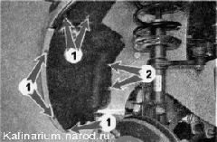

Подкрылок передний - снятие и установкаСнятие 1. Подготавливаем автомобиль к выполнению работы. 2. Снимаем переднее колесо. 3. Ключом TORX 120 отворачиваем три самореза крепления брызговика переднего крыла и снимаем брызговик. 4. Отверткой отворачиваем семь саморезов крепления передней части подкрылка (пять саморезов 1 под крестовую отвертку и два самореза 2 под ключ на 8 мм). 
5. Снимаем переднюю часть подкрылка. 6. Торцовым ключом на 8 мм отворачиваем три самореза крепления задней части подкрылка и снимаем его. Установка Устанавливаем подкрылок в обратной последовательности. |